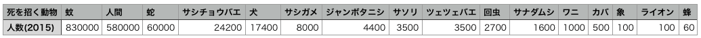
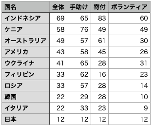
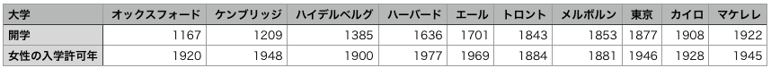

Datamate.jsを使ったサンプル
Datamate.jsライブラリを使ったサンプルを示します。自分の発掘したデータを視覚化するプログラムを作る際の参考にしてください。サンプル1：人を死に至らしめる動物
2015年、150万人以上が動物に殺されており、これは、HIV/AIDSや糖尿病で死亡した人の数とほぼ同じであるとのこと。 1年間に何人が、どんな動物に殺されているか？その情報が、Bill Gates の Gates Notesサイト で公開されています。 そのトップが「蚊」で、蚊を退治することが人々、特に開発途上国の人たちに重要であることを伝えています。2015年の World’s Deadliest Animalsのデータを使い、動物に殺された人数を視覚化してみます。
2015年のデータをCSVファイルDeadlyAnimal.csvとして用意しました。
このファイルの中身は次のような内容です。

【サンプルその１】
const title = "死を招く動物とその被害者数(2015年)";
const d = 4; //円の直径
//↑このページのサンプルでは、値を変更することのない変数は定数として、キーワードconstを使って定義します。
function setup() {
createCanvas(750, 770);
Datamate.make("DeadlyAnimal.csv");
Datamate.makeAreas(0, 0, width, height, 6, 3);
}
function draw() {
background(240);
for (let i=0; i<Datamate.columnCount(); i++) {
drawData(i);
}
textAlign(LEFT, CENTER);
print(title);
text(title, 30, 15); //データ名の表示
}
function drawData(index) {
const area = Datamate.area(index);
const name = Datamate.columnName(index);//列のヘッダ
const value = Datamate.value(0, index);
const count = map(value, 1, 830000, 1, 1500); //円の個数
stroke(200);
noFill();
rect(area.left, area.top, area.width, area.height); // エリアの矩形を描画
noStroke();
fill(200, 0, 0);
let n = 0;
out: //個数分の円を描き終わったら、二重ループを抜けるために先頭にoutというラベルをつけた
for (let j=0; j<area.height/d; j++) {
for (let i=0; i<area.width/d-1; i++) { //area.width/dで、areaの幅に並べられる直径dの円の個数を計算
n++;
if (n>count) {
break out; //円をcountの個数まで書いたらoutというラベルがついている二重ループを終了
}
circle(area.left+(i+1)*d, area.bottom-(j+1)*d-30, d); //円を書く
}
}
fill(0);
textAlign(CENTER, CENTER);
text(name, area.centerX, area.bottom-25);
text(value+"人", area.centerX, area.bottom-10);
}
サンプル2：世界人助け指数
Charities Aid Foundationは、THE WORLD GIVING INDEX2023をその Webサイトで公開しています。

これは世界の国・地域の人を対象に、
- ・過去１ヵ月の間に見知らぬ人を助けたか
- ・寄付をしたか
- ・ボランティアをしたか
右のようなデータです。 このcsvファイルを次のように読み込んでも、
Datamate.make("Giving2023.csv");
あるいは、次のように、行ごとのデータを配列で指定しても同じです。
Datamate.make("国名", ["全体", "手助け", "寄付", "ボランティア"]);
Datamate.make("インドネシア", [68, 61, 82, 61]);
Datamate.make("ウクライナ", [62, 78, 70, 37]);
Datamate.make("ケニア", [60, 76, 53, 51]);
Datamate.make("アメリカ", [58, 76, 61, 38]);
Datamate.make("オーストラリア", [51, 65, 56, 31]);
Datamate.make("フィリピン", [34, 57, 12, 34]);
Datamate.make("ロシア", [43, 57, 29, 16]);
Datamate.make("韓国", [38, 57, 40, 18]);
Datamate.make("イタリア", [37, 53, 42, 15]);
Datamate.make("日本", [18, 21, 16, 17]);
読み込んだデータテーブルから%値を取り出し、それを円弧の角度に換算します。
let targetA = map(value, 0, 100, 0, 360); //データを円の角度に換算円弧の角度を覚えておく配列currentAを用意し、始めは0にしておきます。この現在の角度(currentA[])から、データを元に計算した角度targetAに向けて角度を少しずつ大きくします。下のように、currentAから、targetAとcurrentA[]との差を、変数keisuで設定した割合ずつ縮めていきます(変数keisuの値を0.05としているが、これは差を5%ずつ縮める意味)。
currentA[number] = currentA[number] + (targetA - currentA[number]) * keisu; //角度少しずつ変化
【サンプルその2】
const title = "世界人助け指数";
const keisu = 0.05;
let currentA = []; //項目ごとの途中の角度
function setup() {
createCanvas(600, 300);
Datamate.make("Giving2023.csv"); //行ヘッダが国名
Datamate.makeAreas(0, 30, width, height, 5, 2);
Datamate.play(0.1, 0); // 横方向に動かす
Datamate.loop(true, false);
angleMode(DEGREES); //角度の単位を度単位にする
for (let i=0; i<Datamate.rowCount(); i++) {
currentA[i] = 0; //最初、角度はゼロ
}
}
function draw() {
background(240);
for (let i=0; i<Datamate.rowCount(); i++) {
drawData(i); // データiを描画
}
}
function drawData(number) {
const area = Datamate.area(number); // エリアをとりだす
const index = Datamate.focusX(0); //今フォーカスしているデータの次のインデックス
const syurui = Datamate.columnName(index); //列のヘッダ 寄付などのデータ種名
const country = Datamate.rowName(number); //行のヘッダ
const value = Datamate.value(country, index);
strokeWeight(8); //線を太く
noFill();
stroke(200, 0, 0);
let targetA = map(value, 0, 100, 0, 360); //データを円の角度に換算
currentA[number] = currentA[number] + (targetA - currentA[number]) * keisu; //角度少しずつ変化
//顔の輪郭、円弧の長さでデータを表す。 -90度は時計の12の位置
arc(area.centerX, area.centerY, area.width-15, area.width-15, -90, currentA[number]-90);
strokeWeight(5);
if (dist(mouseX, mouseY, area.centerX, area.centerY) < (area.width-15)/2) { //マウスが円内に入ったら、
ellipse(area.centerX, area.centerY+20, 20, 10); //口
}else{
arc(area.centerX, area.centerY+20, 20, 10, 0, 180); //口
}
noStroke();
fill(200, 0, 0);
circle(area.centerX-12, area.centerY-20, 8); //目
circle(area.centerX+12, area.centerY-20, 8);
fill(0);
textAlign(LEFT, CENTER);
text(title+"("+syurui+")", 30, 30); //データ名の表示
textAlign(CENTER, CENTER);
text(country + "\n" + Datamate.value(country, index) + "%", area.centerX, area.centerY);
}
サンプル3：女性への学部学位授与課程への入学許可年
大学において、女性が男性と同じ基準で学部の学位授与課程への入学を認められた年を10の大学で比較します。 (女性の世界地図, 明石書店, p.152より引用)開学年を表す黒円上で、マウスを押下すると、赤円が開学年のところまで戻り、右への移動を再開します。
また、タイトル横の赤円上のマウス押下で、赤円が一番左から動き、女子学生の学部への入学許可年で止まります。
大学ごとの開学年、女性入学許可年を記した、UnivWomen.csvを用意しました。
次のようなデータです。

このcsvファイルを次のように読み込んで、Datamate内部にテーブルを作ります。
Datamate.make("UnivWomen.csv");
【サンプルその3】
const title = "女性への学部学位授与課程への入学許可年";
const d = 30; //円の直径
const titleX = 30; //タイトルx座標(左端位置)
const titleY = 30; //タイトルy座標（上下中央値)
const redC = 340; //タイトル横赤い円のx座標
let currentX = []; //大学ごとの赤円の位置
function setup() {
createCanvas(700, 500);
Datamate.make("UnivWomen.csv");
Datamate.makeAreas(0, 50, width, height-50, 1, 10);
textAlign(LEFT, CENTER);
print(Datamate.columnCount());
for (let i=0; i<Datamate.columnCount(); i++) {
currentX[i] = 0; //最初、赤円の位置は左端
}
}
function draw() {
background(240);
noStroke();
textAlign(LEFT, CENTER); //タイトル部分
textSize(15);
text(title, titleX, titleY); //データタイトルの表示
fill(200, 0, 0);
circle(redC, titleY, d); //赤い円
fill(0);
circle(redC+d, titleY, d); //黒い円
textAlign(CENTER, CENTER);
textSize(8); //文字サイズを8ピクセルにする
fill(255);
text("開学年", 370, 30); //黒い円の上に文字を描く
for (let i=0; i<Datamate.columnCount(); i++) {
drawData(i); // データiを描画
}
}
function drawData(index) {
const area = Datamate.area(index); // 割り当てられたエリアをとりだす
const open = Datamate.value(Datamate.rowName(0), index);
const women = Datamate.value(Datamate.rowName(1), index);
strokeWeight(5); //線を太く
noFill();
stroke(0);
line(area.left+140, area.centerY, area.right-10, area.centerY); //横線を描く
noStroke();
textSize(8);
//開学の年 黒い円
const openPos = map(open, 1100, 2020, area.left+140, area.right-10);
fill(0);
circle(openPos, area.centerY, d);
textAlign(CENTER, CENTER);
fill(255);
text(open, openPos, area.centerY); //円の上に文字を描く
//女子学生入学年 赤い円
const womenPos = map(women, 1100, 2020, area.left+140, area.right-10);
fill(200, 0, 0);
currentX[index] = lerp(currentX[index], womenPos, 0.02); //右へ少しずつ動く
circle(currentX[index], area.centerY, d);
textAlign(CENTER, CENTER);
fill(255);
text(women, currentX[index], area.centerY); //円の上に文字を描く
//黒円上で、マウス押下すると、赤円が開学のところまで戻り、移動を再開
if (mouseIsPressed && dist(mouseX, mouseY, openPos, area.centerY)<d/2) {
currentX[index] = openPos; //赤円の位置を開学のところへ
fill(0); //黒円を書く準備
circle(openPos, area.centerY, d);
textAlign(CENTER, CENTER);
fill(255);
text(open, openPos, area.centerY); //円の上に文字を描く
}
fill(0);
textAlign(LEFT, CENTER);
textSize(12);
text(Datamate.columnName(index)+"大学", area.left+10, area.centerY);
}
function mousePressed() {
if (dist(mouseX, mouseY, redC, titleY)<d/2) { // タイトル横の赤円上でマウス押下で
for (let i=0; i<Datamate.columnCount(); i++) { //赤い円が左から動く
currentX[i] = 0; //最初、赤円の位置は左端
}
}
}
サンプル4：人を死に至らしめる動物ー別の表現
サンプル１の「人を死に至らしめる動物」では、人数を表す赤丸は四角形の中に並べて表示されるだけで動きません。 「蚊」や「人間」に殺される人数を強調するため、上から円が落ちてきて溜まるビジュアルにしたのが下です。クリックで再起動
重力場の中で落下する物体(この例では赤丸)の位置の計算を、物理計算ライブラリ Matters.jsを使っています。
同じデータでも、視覚化の仕方次第で、人に伝えるインパクトがかわります。さまざまに工夫してしてみてください。
サンプル5：男女間賃金格差
OECDは、 男女間賃金格差のデータを公開しています。男女間賃金格差は、男性所得の中央値に対する男性と女性の所得中央値の差と定義されます。その一部、22ヵ国+OECD全体を抜粋し、CSVファイルGenderWageGapEng.csvとして用意しました。
このデータを使い、男性の賃金を100とした時の、女性の賃金を表現してみます。
ラーニングトレイル１で使った100個の円を描く手法を使ったのが下のスケッチです。マウスをエリア内に入れるとその国のデータを表示します。
【サンプルその5】
const dataTitle = "男性の賃金を100とした時の女性の賃金(2022)";
function setup() {
createCanvas(770, 550);
Datamate.make("GenderWageGapEng.csv"); //行ヘッダが国名
Datamate.makeAreas(0, 30, width, height-30, 6, 4);
noStroke();
}
function draw() {
background(240);
fill(0);
textSize(14);
text(dataTitle, 10, 20); //データ名の表示
for (let i=0; i<Datamate.columnCount(); i++) {
drawData(i); // 列のデータを順に描画
}
}
function drawData(number) {
const area = Datamate.area(number); // エリアをとりだす
const country = Datamate.columnName(number); //列のヘッダ
const value = Datamate.value(0, number);
if (mouseX>area.left && mouseX<area.right && mouseY>area.top && mouseY<area.bottom) {
//マウスがエリアに入ったら円の色は薄い紫で円を描く
drawCircles(country, 100-value, area.left+10, area.top+10, area.left+20, area.top+20, color(187, 183, 218));
textSize(20); //マウスがエリアに入ったら円の上に値を描く
fill(0);
textAlign(CENTER, CENTER);
text((100-value) + "%", area.centerX, area.centerY);
} else {
drawCircles(country, 100-value, area.left+10, area.top+10, area.left+20, area.top+20, color(110, 69, 152));
}
}
//国名と100この円を描く関数。引数は、国名、値、国名のx座標、国名のy座標、最初の円のx座標、最初の円のy座標、円の色
function drawCircles(title, r, titleX, titleY, startX, startY, circleColor) {
fill(0);
textSize(10);
textAlign(LEFT, CENTER);
text(title, titleX, titleY);
let n = 0;
for (let j=9; j>=0; j--) { //円は下の行から描く
for (let i=0; i<10; i++) {
n++;
if (n <= r) {
fill(circleColor); // 塗りを紫にする
} else {
fill(200); // 塗りをグレーにする
}
circle(startX+i*10, startY+j*10, 10);
}
}
}
サンプル6：男女間賃金格差ー別の表現
サンプル5のデータ(男性の賃金を100とした時の、女性の賃金)を、パイチャートの形で表してみました。この例ではエリアは一つで、その中に全てのデータを描いています。周りの国名を示した円にマウスが入るとそのパイチャートの色が変わります。また、この例では、国名が日本語のCSVファイルGenderWageGap.csvを使っています。
【サンプルその6】
const dataTitle = "男性の賃金を100とした時の女性の賃金(2022)";
const roundCircle = 60; //周りの円の直径
let kankaku; //周りの円の間隔(度数)
function setup() {
createCanvas(600, 630);
Datamate.make("GenderWageGap.csv"); //行ヘッダが国名
Datamate.makeAreas(0, 30, width, height-30, 1, 1);
angleMode(DEGREES);
textAlign(CENTER, CENTER);
noStroke();
kankaku = 360 /Datamate.columnCount();
}
function draw() {
background(255);
fill(0);
textSize(14);
textAlign(LEFT, CENTER);
text(dataTitle, 10, 20); //データ名の表示
const area = Datamate.area(0); // エリアをとりだす
translate(area.centerX, area.centerY); //エリアの中心に座標原点を移動
fill(220);
circle(0, 0, area.width-roundCircle*2); //中央に大きな円を描く
for (let i=0; i<Datamate.columnCount(); i++) {
drawData(i, (area.width/2-roundCircle/2), kankaku*i); // 国ごとの円とパイ型を描く
}
}
function drawData(number, radius, angle) { //データ番号, 周りの円が載る円の半径, データごとの角度
const country = Datamate.columnName(number); //列のヘッダ
const value = Datamate.value(0, number);
let paiColor;
let circleColor;
let charColor;
textAlign(CENTER, CENTER);
textSize(9);
if (dist(mouseX-width/2, mouseY-height/2, radius*cos(angle), radius*sin(angle)) < roundCircle/2) {
//周りの円の中にマウスが入った時 座標原点を画面中央に移動しているが、mouseX, mouseYの原点は左上隅
circleColor = color(255); //周りの円の色
charColor = color(0); //文字の色
paiColor = color(0, 0, 200); //円弧の色
} else {
circleColor = color(100);
charColor = color(255);
paiColor = color(300, 255/23*number, 78);
}
fill(circleColor);
circle(radius*cos(angle), radius*sin(angle), roundCircle); //周りの円
fill(charColor);
text(country+"\n"+(100-value)+"%", radius*cos(angle), radius*sin(angle));
fill(paiColor);
const arcR = (radius*2-roundCircle)*(100-value)/100; //パイ型の円弧の直径
arc(0, 0, arcR, arcR, angle-kankaku/2, (angle-kankaku/2)+kankaku);
}